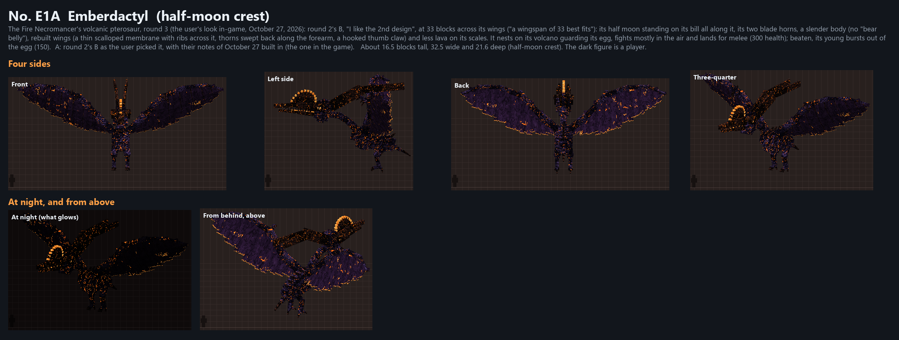
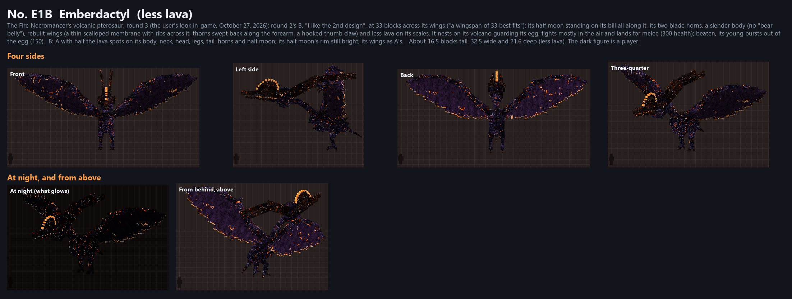
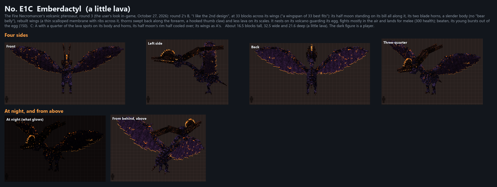
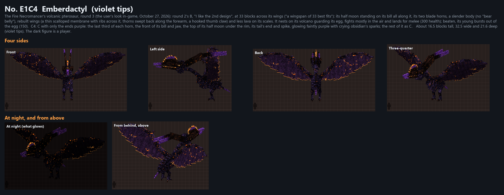

E1D almost no lava

E1A (round 3's pick), E1B-E1D (less lava on its body and horns, October 31, 2026) and E1C1-E1C4 (E1C with its bill,
jaw, half moon, horns and tail purple, November 2). The user picked E1C3, violet and lava (November 3: "E1 C3 is
the best"): it is now the only adult, E1A (the current page). Side by side:
E1A to E1D, E1C and E1C1 to E1C4
(drawn by tools/fire/firedesigns/emberdactyl_round4/lava_looks.py).





